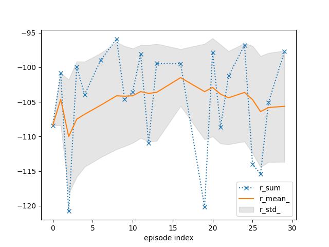
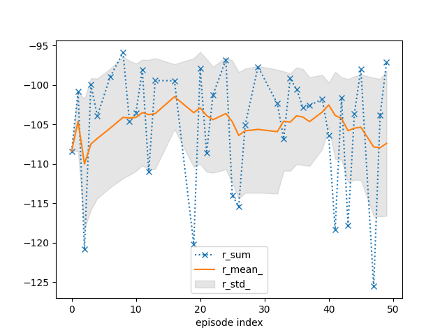
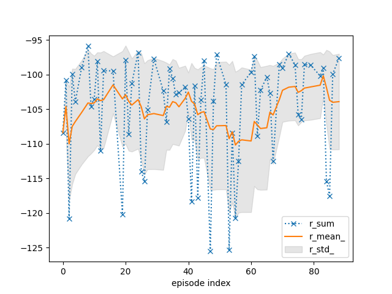
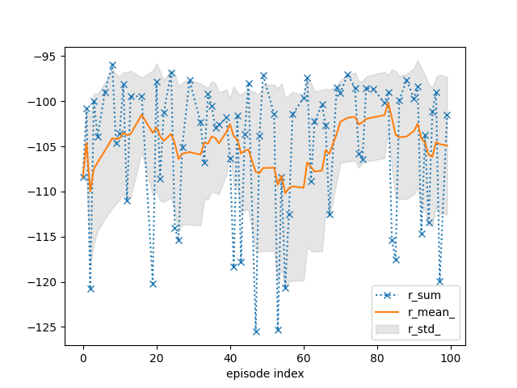

Note
Go to the end to download the full example code.
Coursework Template
# # Coursework Template
Dependencies and imports
This can take a minute…
# !pip install swig
# !pip install --upgrade rldurham
import torch
import rldurham as rld
Reinforcement learning agent
Replace this with your own agent, I recommend starting with TD3 (lecture 8).
class Agent(torch.nn.Module):
def __init__(self):
super(Agent, self).__init__()
def sample_action(self, s):
return torch.rand(act_dim) * 2 - 1 # unifrom random in [-1, 1]
def put_data(self, action, observation, reward):
pass
def train(self):
pass
Prepare the environment and wrap it to capture statistics, logs, and videos
env = rld.make("rldurham/Walker", render_mode="rgb_array")
# env = rld.make("rldurham/Walker", render_mode="rgb_array", hardcore=True) # only attempt this when your agent has solved the non-hardcore version
# get statistics, logs, and videos
env = rld.Recorder(
env,
smoothing=10, # track rolling averages (useful for plotting)
video=True, # enable recording videos
video_folder="videos", # folder for videos
video_prefix="xxxx00-agent-video", # prefix for videos (replace xxxx00 with your username)
logs=True, # keep logs
)
# training on CPU recommended
rld.check_device()
# environment info
discrete_act, discrete_obs, act_dim, obs_dim = rld.env_info(env, print_out=True)
# render start image
env.reset(seed=42)
rld.render(env)
The device is: cpu (as recommended)
actions are continuous with 4 dimensions/#actions
observations are continuous with 24 dimensions/#observations
maximum timesteps is: 2000
# in the submission please use seed_everything with seed 42 for verification
seed, observation, info = rld.seed_everything(42, env)
# initialise agent
agent = Agent()
max_episodes = 100
max_timesteps = 2000
# track statistics for plotting
tracker = rld.InfoTracker()
# switch video recording off (only switch on every x episodes as this is slow)
env.video = False
# training procedure
for episode in range(max_episodes):
# recording statistics and video can be switched on and off (video recording is slow!)
# env.info = episode % 10 == 0 # track every x episodes (usually tracking every episode is fine)
# env.video = episode % 10 == 0 # record videos every x episodes (set BEFORE calling reset!)
# reset for new episode
observation, info = env.reset()
# run episode
for t in range(max_timesteps):
# select the agent action
action = agent.sample_action(observation)
# take action in the environment
observation, reward, terminated, truncated, info = env.step(action)
# remember
agent.put_data(action, observation, reward)
# check whether done
done = terminated or truncated
# stop episode
if done:
break
# TRAIN THE AGENT HERE!
# track and plot statistics
tracker.track(info)
if (episode + 1) % 10 == 0:
tracker.plot(r_mean_=True, r_std_=True, r_sum=dict(linestyle=':', marker='x'))
# don't forget to close environment (e.g. triggers last video save)
env.close()
# write log file (for coursework)
env.write_log(folder="logs", file="xxxx00-agent-log.txt") # replace xxxx00 with your username
# A small demo with a predefined heuristic that is suboptimal and has no notion of balance (and is designed for the orignal BipedalWalker environment)...
- 
- 


- 
- 
/home/runner/.local/lib/python3.12/site-packages/gymnasium/utils/passive_env_checker.py:245: UserWarning: WARN: The reward returned by `step()` must be a float, int, np.integer or np.floating, actual type: <class 'torch.Tensor'>
logger.warn(
from gymnasium.envs.box2d.bipedal_walker import BipedalWalkerHeuristics
env = rld.make(
"rldurham/Walker",
# "BipedalWalker-v3",
render_mode="human",
# render_mode="rgb_array",
hardcore=False,
# hardcore=True,
)
_, obs, info = rld.seed_everything(42, env)
heuristics = BipedalWalkerHeuristics()
act = heuristics.step_heuristic(obs)
for _ in range(500):
obs, rew, terminated, truncated, info = env.step(act)
act = heuristics.step_heuristic(obs)
if terminated or truncated:
break
if env.render_mode == "rgb_array":
rld.render(env, clear=True)
env.close()
Total running time of the script: (1 minutes 18.330 seconds)